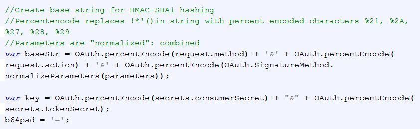

Gather your authorization credentials
Yelp requires that you submit the following information to authenticate the API call:
- The oauth_consumer_key and oauth_token were provided for you on the previous page.
- The oauth_signature_method: HMAC-SHA1. HMAC is "Hash Message Authentication Code"; SHA1 is "Secure Hash Algorithm 1". HMAC-SHA1 therefore describes the type of hash algorithm which produces a value used to encrypt and authenticate the API request.
- the oauth_timestamp, oauth_nonce and secure oauth_signature are generated as described below.
Get user input
User search parameters can be entered on the command line during the .js function call.
As demonstrated in Lines 1-3, a minimum of three arguments are obtained. The arguments are strings indicating business type (argument 2) and location (all other arguments from 3 onward).
The "for" loop on Lines 10-12 combines arguments argv[3] to argv[length - 1] to represent location (city, state and zip).
Search information can be obtained from a web form. Above you see the code used to generate the working example under the "API At Work" tab.
In this example, jQuery was used to load Javascript content upon completion of web page loading. When the submit button is clicked, the "onclick" event handler fires and executes an anonymous function to obtain and save the form entry values. City, state and zip information are joined into a single "location" string.
Using NPM Libraries
"Require" is a built-in Node.js function. Here, it is being used to load a Yelp npm module. This module returns a "Yelp" object type which can be used to instantiate new "Yelp" objects, which contain secure credential and search parameter string attributes.
NPM modules are used by Node.js, and some (like the Yelp module) cannot be directly implemented in a browser. We will need to find another way of "packaging" secure credential and search parameter information for making the API call.
Creating a Request Object
The NPM Yelp module simplifies the request process in many ways. Just create a Yelp object and load it with your credentials; the rest is done for you:
- It pre-populates the URL to which the request will be sent, 'https://api.yelp.com/v2/search'.
- It defines the send method (GET) to be used for the request.
- It generates the timestamp, nonce, and hashed OAuth signature for authentication when you make calls to the API, and includes it with search parameters in the sent object. No need to create a nonce or time stamp yourself, or hash parameters and package the result.
- It specifies the type of object (JSONP) which will be returned by the Yelp API.
Contrast this with the multiple individual steps needed for Javascript/jQuery and Ajax....
Gathering Request Contents
The jQuery request has to be manually populated with all of the values seen above, in contrast with Yelp npm module and Node.js.
Here you can see that information has been logically grouped into individual objects containing different elements of the request- information to be included (parameters), submission type/address (request), and secret information (secrets). Note that the 'oauth_signature' under parameters is blank; this information will be added later after the secrets are used to generate it. Oauth_nonce and oauth_timestamp are generated as described below.
Note:The nonce and timestamp code are actually placed before the parameters/request/secrets objects in the code for the working program, so that nonce and time could be included in the object during its creation. They were provided out-of-sequence here for better tutorial flow. (You can also populate them later if preferred, in the manner shown for the oauth_signature.)
Nonce Generation
As shown, the character set used to produce the nonce is a string (nonceChars) comprised of lower and upper case letters and single digits. A position in the character set is chosen by randomly generated a number within the total set length using the Math.random and Math.floor functions; the value at that set position is then appended to the nonce being created until the nonce reaches a length of 6 characters.
Timestamp Generation
The timestamp represents the actual time passed in seconds since the Unix Epoch, January 1, 1970, 00:00:00 UTC. Like the nonce, the timestamp is different for each request sent and therefore marks a given request as unique.
A new date object is created and its getTime method is invoked to generate the current time.
You may also use, as an alternative for manually generating the timestamp and nonce, the function Oauth.setTimestampandNonce(request) here. As demonstrated by the code above, the information in the request object is not really required to perform the operation, although included as a parameter in the setTimestampandNonce function call.
Creating a Base String and Percent Encoding
Values to be hashed to create the Oauth signature include the request type (request.method), url (request.action), and all parameters shown in the previous screen shot. The OAuth 1.0 standard specifies that they must first be percent encoded, by removing all !*'() symbols and respectively replacing them with percent encoded characters %21, %2A, %27, %28 and %29.
In this example, Oauth method support functions "percentEncode" and "normalizeParameters(parameters)" found here were used to search (via regular expressions), strip out and replace all of the characters:
Once encoded, the values are concatenated with "&" to create the baseString as an input parameter to the base64 hashing function.
Note that percent encoding and string concatenation must also be performed on the secrets to create the key.
Creating the Signature
Once the base string and key are ready, you can perform the b64_hmac_sha1(key, baseStr) function found here. The function returns the encoded string, which may be assigned to oauth_signature in the parameters object.
This completes the request content, and you're ready to talk to Yelp!!
Sending the Request to the Yelp API
For both Node.js and Javascript/jQuery/Ajax, requests will be sent asynchronously. This requires us to create callbacks or promises which manage the returned information that was requested, or an error code in the event of failure. Examples of promises (in Node.js) and callbacks (in Jquery) are provided below.
The Yelp Object
All required parameters are neatly (and abstractly) bundled into the Yelp object, with the exception of the query parameters (business type and location).
The object's "search" method accepts as parameters key/value pairs of term/description and location/description- here, the "busType" and "location" strings created from command line input.
Calling the search method serves to send the information to Yelp.
jQuery and the Ajax Request
The ajax request must include:
- The url for submission
- All parameters as data
- data type: Data format being returned from the server. The data type returned is JSONP, or "JSON with Padding". The JSON object can't be sent from one server to another directly, due to a browser's Same-Origin policy, designed to prevent malicious scripts from accessing your page data. The "padding" is a function call wrapped around the returned JSON object; the function is not impacted by the same-origin policy and can be interpreted by the browser.
- cache: True or false, depending on whether pages should be cached by the browser.
- error: This callback handler takes the place of the .catch handler described under the Node.js code. A function can be included to respond to errors returned by the server.
- success: This callback handler takes the place of the .then handler described under the Node.js code. A placeholder ("data") is again provided for the returned JSON object.
Response and Error Handling
Response is managed through a Promise. ".then" and ".catch" handler functions are chained together at the end of the search function, and provide a place holder for the information ("data" in the example) returned upon callback. Results "fall through" each handler, with execution of only those that apply.
For example, a valid result returned from the API using the code displayed above will execute the ".then" handler, but take no action with the ".catch" handler. A returned error would fall through, with .catch "catching" it and causing the error type to print to the console.
The error below was generated as a demonstration. Changing the consumer key by 1 character yields an invalid OAuth signature which is rejected by the API.

The returned error caused the ".catch" block handler to output the error type to the console.
Processing the Results
Let's now examine how valid data is returned from the API via callback/promise, and parsed after receipt.